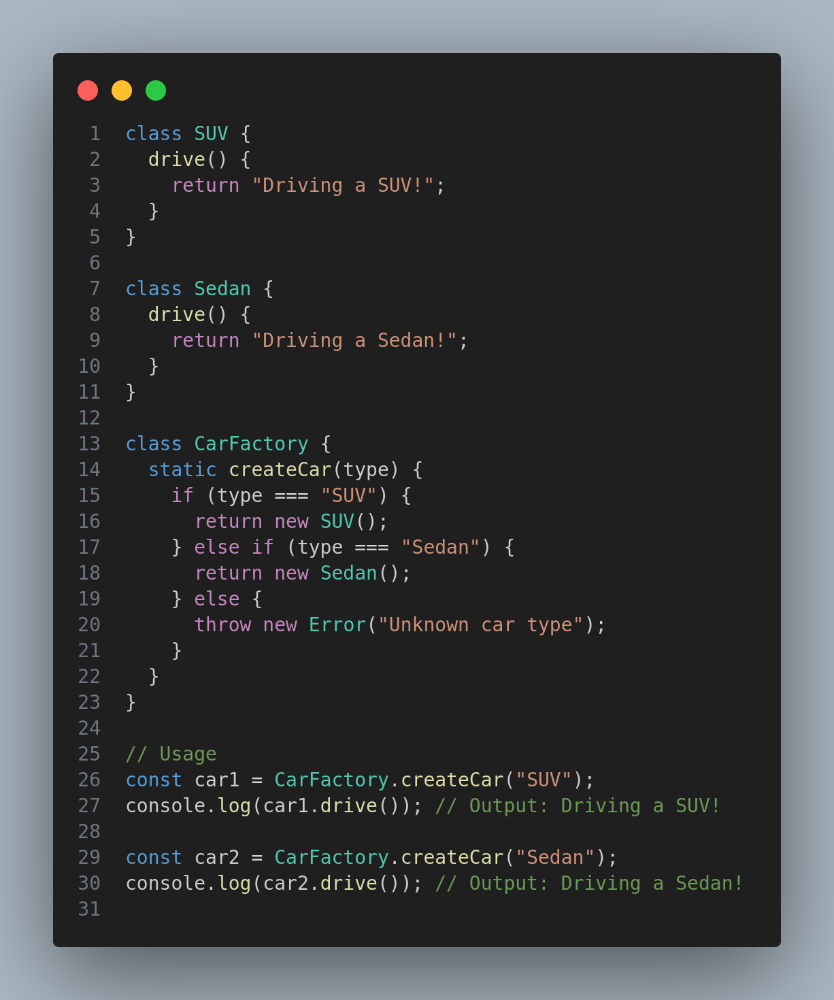
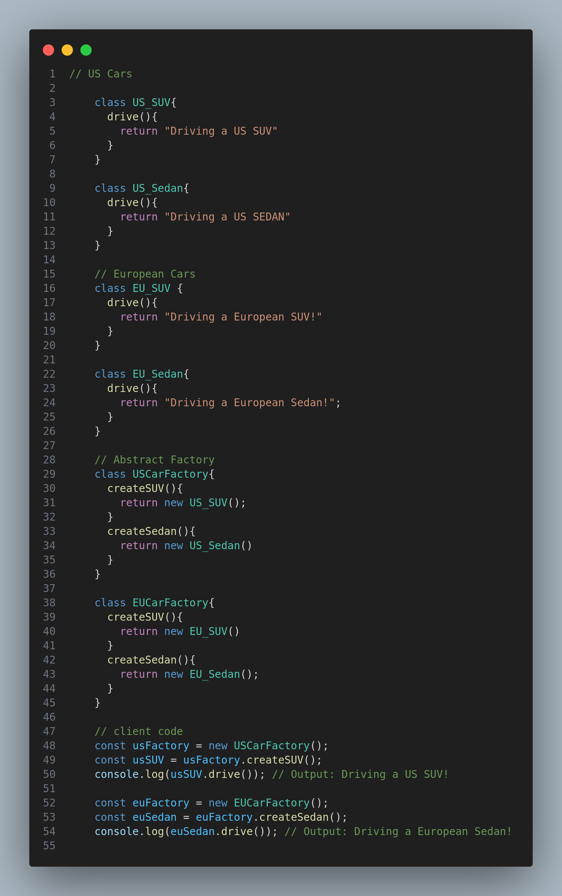
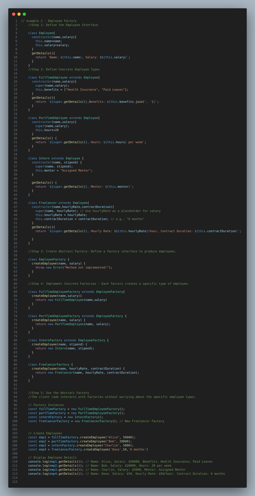

Abstraction means hiding the details of how something works and exposing only what is necessary to the user. It helps to simplify complex systems by focusing only on the essential parts.
You know how to drive it (accelerate, brake, steer), but you don’t need to know how the engine, transmission, or brakes work internally. The details are abstracted away.
The Factory Pattern focuses on creating one type of object. You have a single factory function that decides which specific object to create based on some input. 
Note:In this case, the factory (CarFactory) creates one kind of product (Car).
The Abstract Factory Pattern provides a way to create families of related or dependent objects without specifying their concrete classes. Instead of one factory, you have multiple factories (or a factory of factories).
Example: Imagine you're running multiple factories for cars in different regions (e.g., US Factory, European Factory). Each factory can produce an SUV and a Sedan, but the implementation might vary slightly based on the region.

Here, USCarFactory and EUCarFactory are "factories" that create a family of related objects (SUV and Sedan for their respective regions).
Imagine a system where we need to create different types of employees: Full-Time, Part-Time, and Interns.

How is this Abstract? Abstraction in Factories: